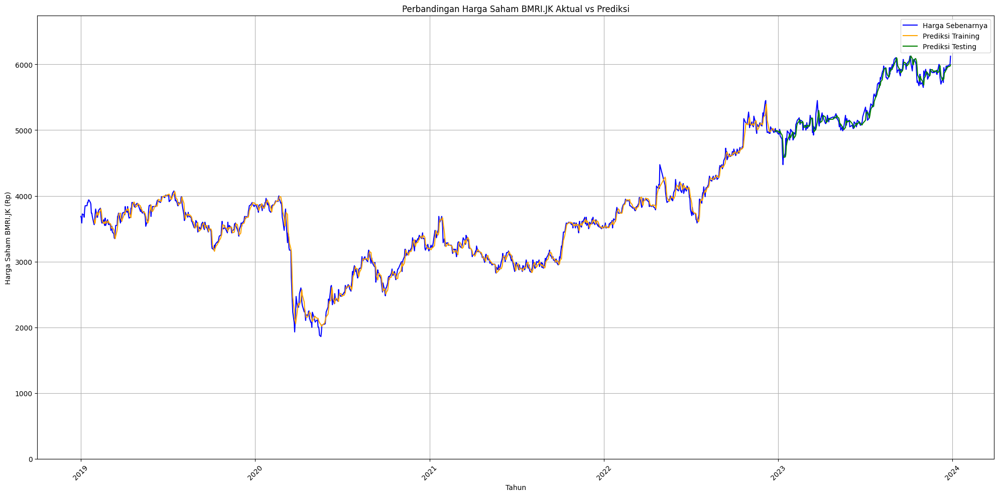
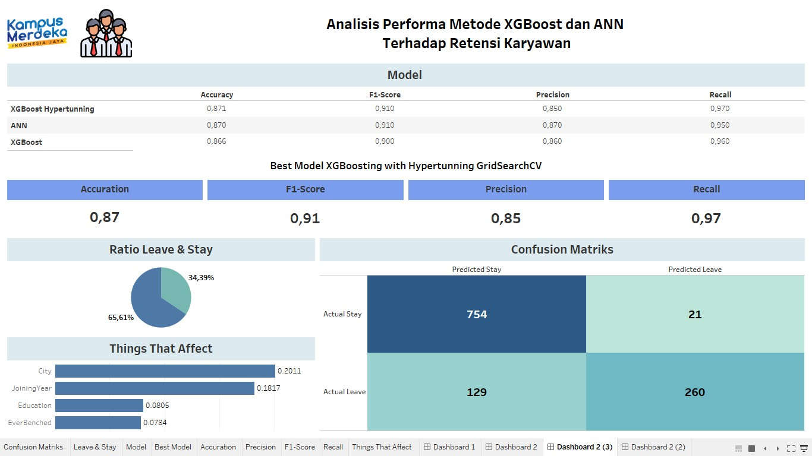

A curated collection of AI, machine learning, and data-driven projects focused on real-world problem solving.

This project focuses on predicting the stock price of PT Bank Mandiri Tbk using a Long Short-Term Memory (LSTM) deep learning model. The model is trained on historical stock data (date and closing price) from Yahoo Finance covering 2019 to 2023. LSTM is used because it is effective in capturing patterns in time-series data, and the training process is optimized using the Adam optimizer to improve efficiency and performance.
The model is evaluated using RMSE, MAPE, and accuracy. The best result is achieved with an 80:20 data split, 100 epochs, and batch size 16, producing RMSE 82.97, MAPE 1.16%, and accuracy 98.83%. Overall, the model shows strong performance in predicting stock movements and can support investment decision-making.

This project focuses on predicting the stock price of PT Bank Mandiri Tbk using a Long Short-Term Memory (LSTM) deep learning model. The model is trained on historical stock data (date and closing price) obtained from Yahoo Finance, covering the period from 2019 to 2023. LSTM is chosen due to its strong capability in capturing patterns within time-series data, while the training process is optimized using the Adam optimizer to improve efficiency and model performance.
The model is evaluated using RMSE, MAPE, and accuracy metrics. The best performance is achieved using an 80:20 data split, 100 epochs, and a batch size of 16, resulting in RMSE of 82.97, MAPE of 1.16%, and accuracy of 98.83%. Overall, the model demonstrates strong predictive capability in forecasting stock price movements and can serve as a supportive tool for investment decision-making.